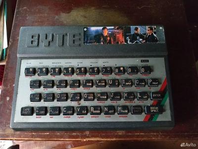
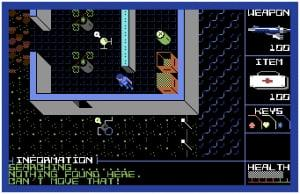
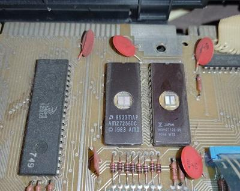
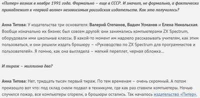

{kind=link}
dlinyj пишет BIOS
Интересный опыт по запуску своего биоса
Цитируемое сообщение (оригинал в Telegram "dlinyj")
Хотели ли вы когда-нибудь написать свой BIOS? А BIOS вместе со встроенным BASIC? А вообще представляете как работает BIOS и как писать свои модули расширения? Уже давно у людей витает в воздухе идея сделать свой ROM BASIC и поиграться с ним, но вот прям рабочих и живых решений, по крайне мере в рунете я не встречал. В чатике Ретрокомпьютерщиков давно муссируется тема, как это сделать. И сложнее всего было не проболтаться, что я знаю как это делать и уже есть готовое решение.
И вот, настал счастливый миг, когда могу явить это решение широкой публике. Подробности в моей статье:
Пишем свой ROM BIOS
Буду рад вашим комментариям, лайкам, дополнениям.
Терминатор-2
Я когда вижу такие лоты на "Авито", у меня в голове зреет безумная идея собрать всю коллекцию наклеек из жвачки "Терминатор-2" в виде наклеек на старых спектрумах. Тут вот их сразу две, и обе, насколько мне помнится, редкие. Ну или лайт-вариант: собрать просто фото таких наклеек 😄
{kind=link}

Портирование ScummVM на Next
Очень интересная статья про портирование ScummVM (движка для квестов от Lucas Arts) на ZX Spectrum Next
Исходники Attack of PETSCII Robots
Опубликованы исходники игры Attack of PETSCII Robots, которая была написана пару лет назад ютубером 8-bit guy для линейки ретро-компьютеров от Commodore (C64, VIC20 и т.д.).
https://github.com/zeropolis79
Исходники представляют собой старый добрый ассемблерный файл на 5 тыщ строк с эпизодическими комментариями, но за прошедшее время энтузиасты, получавшие этот код в частном порядке, смогли портировать игру на кучу архитектур включая спектрум. Так что разобраться в них должно быть более, чем реально.
{kind=link}

Магическое ПЗУ
Когда спектрумы были большими, а УФ ПЗУ — дорогими, многие платы делались в расчете под два вида ПЗУ — или одна 16-килобайтная микросхема, или две 8-килобайтные. А вот сегодня наткнулся на третий подход 🤯 48 килобайт ПЗУ в Спектруме-48, как тебе такое, Илон Маск?
{kind=link}

UPD: Дело раскрыто! Правая микросхема - родное ПЗУ от Магика-06. В левой прошит TR-DOS + оригинальное ПЗУ 1982. Кому-то было лень выпаивать старую микросхему и он просто воспользовался посадочным местом рядом. При этом /CE отрезан у обеих микросхем и висит в воздухе. Выглядит, будто начали подключать дисковод, но в процессе плюнули и купили Пентагон бросили.
Ещё про "Питер"
Вот ещё из недавнего интервью нынешнего директора "Питера" про те события.
{kind=link}

Издательство "Питер"
Издательство "Питер", оказывается, начиналось вовсе не как издательство, а как шайка инженеров-спекулянтов, мечтающих переложить много-много советских рублей из казны себе в карман в наличном виде. Ведь организовать кооператив, который будет что-то продавать государству - это был один из главных способов сколотить состояние в Перестройку.
Впрочем, они, по-видимому, всё-таки реализовали какой-то программно-аппаратный комплекс для локальной сети своего КУВТ, а не просто клепали "Ленинграды" в подвале. Найти бы от него хотя бы программы, чтоб понять, как оно работало...
Юдзуру Ханю
Немногие знают, но завершивший сегодня карьеру фигурист Юдзуру Ханю, двукратный олимпийский чемпион, кроме фигурного катания угорает ещё и по ретро-консолям. По крайней мере он, чье детство проходило уже в эпоху Nintendo Game Cube и Wii, своей любимой приставкой считает старую добрую Super Famicom (супернинтендо по-нашему, ну или SNES).
Аппарат физиотерапевтический
Наткнулся на Авито. Учитывая, что Wii — это та приставка, где нужно несколько часов усиленно махать контроллером перед экраном или прыгать на коврике, троллинг получился зачетный 😏